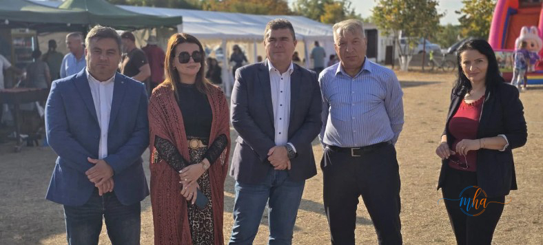
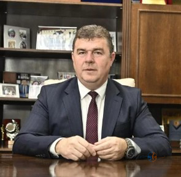

ȘIȘEȘTI, MEHEDINȚI – Festivalul Ceramicii de la Șișești a continuat cu un spectacol de muzică populară care a adus în prim-plan folclorul autentic și artiști îndrăgiți de public. Ansamblul Folcloric „Doina Mehedințiului” a urcat pe scenă și a oferit momente de bucurie, emoție și voie bună, într-o atmosferă dedicată tradițiilor și valorilor culturale din Mehedinți.
Evenimentul a reunit artiști, reprezentanți ai administrației publice și iubitori ai folclorului. Manifestarea a arătat, încă o dată, cât de important este să păstrăm și să promovăm patrimoniul cultural local.
Spectacol de muzică populară cu Ansamblul „Doina Mehedințiului”
Publicul prezent la Festivalul Ceramicii s-a bucurat de un program artistic susținut de Ansamblul Folcloric „Doina Mehedințiului”. Ansamblul a adus pe scenă cântece populare și interpreți apreciați de iubitorii muzicii tradiționale.
Printre artiștii care au încântat spectatorii s-au numărat Anica Ganțu, Cosmin Bîrlan, Ionela Bădălan, Sanda Argint și Angela Magheru. Prin repertoriul lor, aceștia au creat o atmosferă de sărbătoare și le-au oferit spectatorilor ocazia să se bucure de frumusețea folclorului românesc.
Fanfară, copii și localnici în port popular, la Festivalul Ceramicii de la Șișești.
Autoritățile județene, prezente la festival
La eveniment au participat Aladin Georgescu, președintele Consiliului Județean Mehedinți, senatorul Oana Buzatu, deputatul Alin Chirilă, vicepreședintele Consiliului Județean Mehedinți Ionică Negru și Tania Lăin, managerul Centrului Cultural „Nichita Stănescu”.

Reprezentanți ai autorităților județene, prezenți la Festivalul Ceramicii de la Șișești.

Aladin Georgescu, președintele Consiliului Județean Mehedinți.
„Îl felicit pe primarul comunei Șișești, Marian-Ion Răducan, și pe toți cei implicați în organizarea festivalului, care a oferit publicului două zile dedicate tradițiilor, meșteșugurilor și muzicii populare”, a declarat Aladin Georgescu, președintele Consiliului Județean Mehedinți.
Meșteșugurile tradiționale și ceramica populară, în centrul atenției
Pe lângă spectacolul folcloric, Festivalul Ceramicii de la Șișești a pus în prim-plan, timp de două zile, meșteșugurile tradiționale, ceramica populară și valorile care definesc identitatea culturală a comunităților locale.
Meșterii populari, artiștii și delegațiile din Serbia au transformat festivalul într-un prilej de întâlnire și schimb cultural. Olăritul, meșteșug transmis din generație în generație, a avut un loc important în cadrul evenimentului. El a arătat cât de bogate sunt tradițiile locului și cât de talentați sunt cei care duc mai departe aceste îndeletniciri.
Olăritul, un meșteșug care trebuie păstrat
Ceramica populară este una dintre cele mai vechi forme de artă tradițională din spațiul românesc. Vasele de lut modelate la roata olarului, decorate și arse în cuptor, erau folosite cândva în fiecare gospodărie. Astăzi, ele au devenit obiecte de patrimoniu și de colecție.
Festivaluri precum cel de la Șișești au un rol important. Le oferă meșterilor un loc unde să-și prezinte lucrările, le arată celor tineri cum se lucrează lutul și ajută la păstrarea unor tehnici care altfel s-ar putea pierde. Pentru vizitatori, este o ocazie rară de a vedea de aproape cum se naște un obiect de ceramică și de a cumpăra produse autentice, făcute de mână.
Prietenie pe cele două maluri ale Dunării
Participarea delegațiilor din Serbia a întărit și legăturile de prietenie dintre comunitățile de pe cele două maluri ale Dunării. Festivalul a arătat că tradițiile și cultura pot apropia oameni și comunități dincolo de granițe.
Organizarea festivalului a fost susținută de Consiliul Județean Mehedinți, prin Centrul Cultural „Nichita Stănescu”. Implicarea instituțiilor contribuie la promovarea tradițiilor și a patrimoniului cultural al județului.
Două zile de sărbătoare pentru comunitate
Festivalul Ceramicii de la Șișești confirmă rolul evenimentelor culturale în păstrarea identității locale, în sprijinirea meșterilor populari și în promovarea județului Mehedinți ca loc al tradițiilor autentice.
Prin ceramica populară, muzica folclorică și dialogul cultural, manifestarea le-a oferit localnicilor două zile de sărbătoare și i-a apropiat de valorile moștenite din generație în generație.
Sursa: Consiliul Județean Mehedinți / Redacția MehedintiAzi.ro